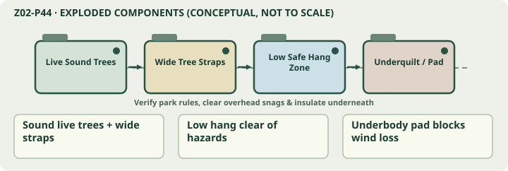

Z02-P44 · Shelter and housing · New manuscript
Assess hammock suspension limits, under-insulation and tree-bark rules
Use manufactured camping hammocks safely where legal while preventing underbody heat loss, tree damage and fall hazards.
When it applies · Forested sites where hammocks are expressly permitted by land-agency rules and healthy mature live trees exist.
Equipment · Rated hammock with wide tree-saver straps, compatible rain tarp, dedicated underquilt or sleeping pad and overhead hazard check.

Actions
- Verify local park rules (some units prohibit hanging from trees) and inspect both support trees and the canopy above for dead limbs, rot or leaning trunks before rigging.[E03, E13, E22]
- Use wide tree-friendly webbing straps on sound, sufficiently thick live trees—never hang over sharp rocks, steep drop-offs or high above the ground where a strap slip causes serious fall injury.[E22, E20, ED]
- Add dedicated underbody insulation (underquilt or properly positioned pad) because compressed sleeping-bag loft beneath a suspended hammock loses heat rapidly to moving air underneath.[E05, E15, E20]
Failure recognition · Hanging from a dead brittle snag in breezy woods, or sleeping in a hammock at 45°F with only a sleeping bag and waking hypothermic from convective cooling underneath.[E13, E15, E06]
Verify · Confirm site legality, live sound anchor trees, clear overhead canopy, low safe hang height over clear ground and full underbody insulation.[E03, E13, E22, E05, ED]
Stop or change course · Never hang from dead trees, fragile saplings, railings or unrated structures; switch to ground shelter or substantial refuge during high winds or lightning.[E13, E07, E16]
Evidence and editorial notes
- E03 · NPS · Finding and Setting Up a Campsite (current web edition)
- Section: Finding a campsite · Conditions: Legal established or designated campsite
Support: Choose a durable legal site suited to the conditions. Campsite rules and physical risks vary by park.
Limitations: Established sites can still develop new hazard trees or flood risk after storms. · Conflicting evidence: None; requires live site inspection even at designated pads.
Editorial note: First gate of shelter site selection. · Specialist reviewer: Land management and wilderness shelter
Primary source · checked 2026-11-24 - E05 · NWS · What To Do If You're Caught in a Winter Storm (current web edition)
- Section: Outside and find shelter · Conditions: Cold, wet or windy winter conditions
Support: Block wind, stay dry and keep off cold ground. Keep exposure reduction separate from making a fire.
Limitations: Improvised windbreaks do not provide rated thermal protection or snow-load capacity. · Conflicting evidence: None; aligns with CDC-H.
Editorial note: Separates wind, ground, and moisture heat-loss pathways. · Specialist reviewer: Cold-weather shelter specialist
Primary source · checked 2026-11-24 - E06 · CDC · Preventing Hypothermia (current web edition)
- Section: Recognizing and treating hypothermia · Conditions: Cold wet exposure; signs such as confusion, slurred speech, fumbling or drowsiness
Support: Suspected hypothermia warrants prompt help and protection from further cooling. It can occur above freezing if wet or chilled.
Limitations: Early mild shivering can mask rapidly worsening judgment impairment. · Conflicting evidence: None; aligns with ARC and WMS guidance.
Editorial note: Anchors exposure-to-medical escalation thresholds. · Specialist reviewer: Wilderness medicine
Primary source · checked 2026-11-24 - E07 · NWS · Lightning Tips (current web edition)
- Section: If you hear thunder; when it is safe to return · Conditions: Thunderstorm and reachable substantial building or enclosed hard-topped vehicle
Support: Move to proper shelter at thunder. Wait 30 minutes after last thunder before resuming outdoor activity.
Limitations: Fabric tents, open pavilions, and trees are not lightning-safe shelters. · Conflicting evidence: None; 30-minute rule is standard NWS guidance.
Editorial note: Separates weather cover from lightning protection in Z02. · Specialist reviewer: Weather safety and emergency management
Primary source · checked 2026-11-24 - E13 · USDA Forest Service · Hazard Tree Safety (agency PDF)
- Section: What You Can Do to Reduce Risk · Conditions: Forest campsites and stops
Support: Look for dead trees and falling material. Stay away from hazardous trees and move away when winds make the site unsafe.
Limitations: Internal decay and root rot can cause live-looking trees to fail in saturated soils or high wind. · Conflicting evidence: Does not specify a universal exclusion radius; tree height and slope govern fall reach.
Editorial note: Prevents false precision on fall-zone distance while requiring overhead screening. · Specialist reviewer: Land management and arboriculture safety
Primary source · checked 2026-11-24 - E15 · NWS · Cold Weather Safety (current web edition)
- Section: Cold Weather Safety > Wind Chill and Dressing for Cold · Conditions: Cold, windy conditions where exposed skin cools rapidly
Support: Wind removes the thin warm air boundary layer around skin and permeable fabrics, sharply accelerating heat loss and frostbite onset; windproof outer shells and sheltered microclimates mitigate convective loss.
Limitations: Wind chill charts apply to exposed skin and do not change freezing point of water or equipment. · Conflicting evidence: None; clarifies physical mechanism of convective heat loss.
Editorial note: Supports wind-block geometry, shell layering, and wind-chill risk decisions. · Specialist reviewer: Cold-weather shelter and meteorology
Primary source · checked 2026-11-24 - E16 · NWS · Wind Safety (current web edition)
- Section: Wind Safety > High Wind Hazards · Conditions: Forecast or developing high winds, squalls, or straight-line winds
Support: High winds topple trees, loft debris, and stress lightweight shelters beyond fabric and anchor limits; relocate out of timbered fall zones and into substantial shelter before gusts peak.
Limitations: Tents and tarps lack standardized wind-speed survival guarantees across soil types and pitch angles. · Conflicting evidence: None; avoids unvalidated mph ratings for improvised pitches.
Editorial note: Drives high-wind shelter inspection, guying limits, and abandonment thresholds. · Specialist reviewer: Weather safety and shelter equipment
Primary source · checked 2026-11-24 - E20 · NPS · Camping: What to Bring (current web edition)
- Section: Camping: What to Bring > Shelter and Sleep System · Conditions: Overnight camping across three-season and cool conditions
Support: Match tent/tarp, groundsheet, sleeping pad, and sleeping bag ratings to expected night lows and precipitation; test pitching and inspect poles, zippers, and stakes before departure.
Limitations: Manufacturer comfort ratings assume dry insulation, ground pad use, and adequate caloric intake. · Conflicting evidence: None; reinforces pre-trip inspection and dry-sleep separation.
Editorial note: Anchors manufactured shelter selection, groundsheet fit, and gear readiness. · Specialist reviewer: Shelter equipment and field education
Primary source · checked 2026-11-24 - E22 · NPS · Leave No Trace Seven Principles (current web edition)
- Section: Principle 2 > Travel and Camp on Durable Surfaces · Conditions: Campsite selection and shelter setup on public lands
Support: Pitch shelters on established pads, rock, gravel, dry grass, or snow rather than fragile meadows or saturated shorelines; do not alter terrain or cut live vegetation for shelter frames.
Limitations: Deadfall shelter construction is inappropriate in high-use or protected zones except genuine life-safety emergencies. · Conflicting evidence: Restricts destructive improvised shelter building during routine trips.
Editorial note: Separates lawful low-impact practice from emergency improvised cover. · Specialist reviewer: Land management and wilderness ethics
Primary source · checked 2026-11-24
Source lineage · NPS Leave No Trace and camping safety; new manuscript · Classification · New manuscript.